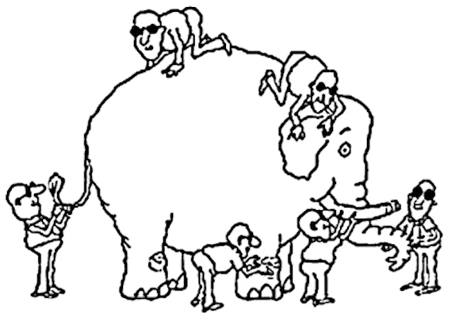
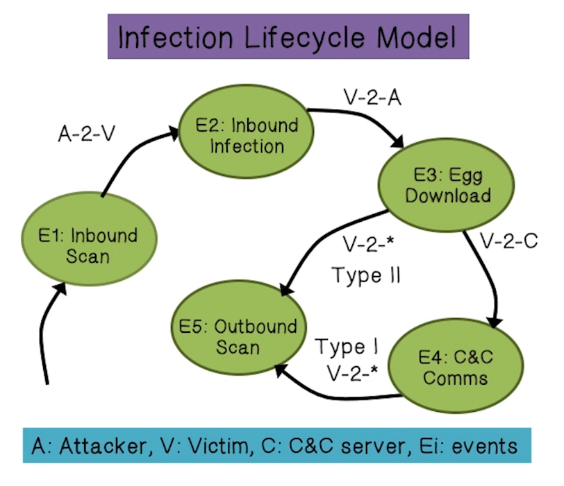
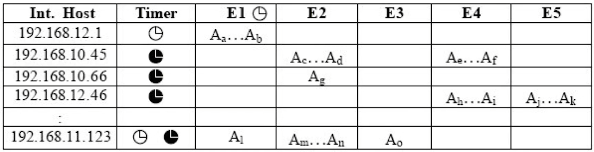
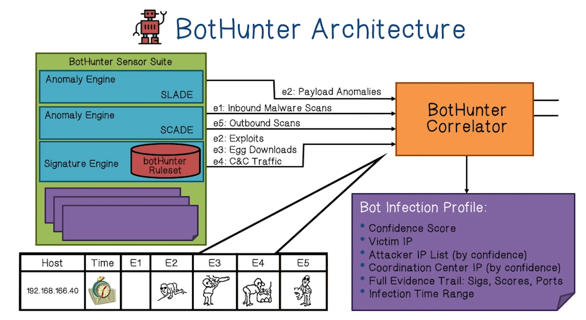
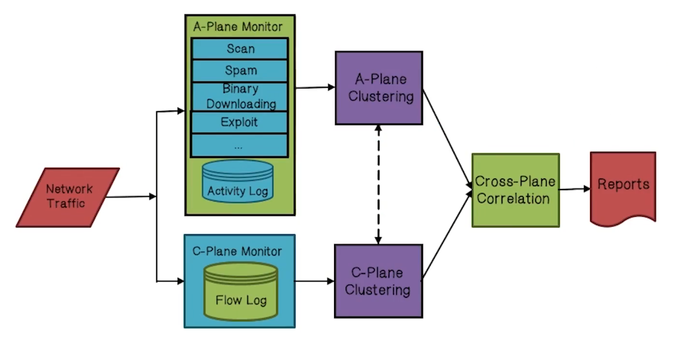
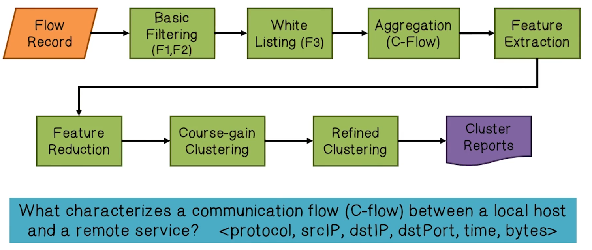
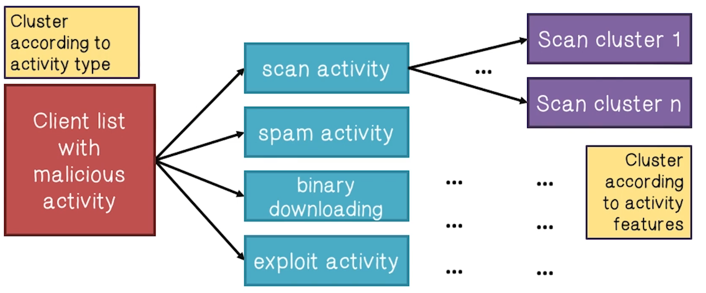
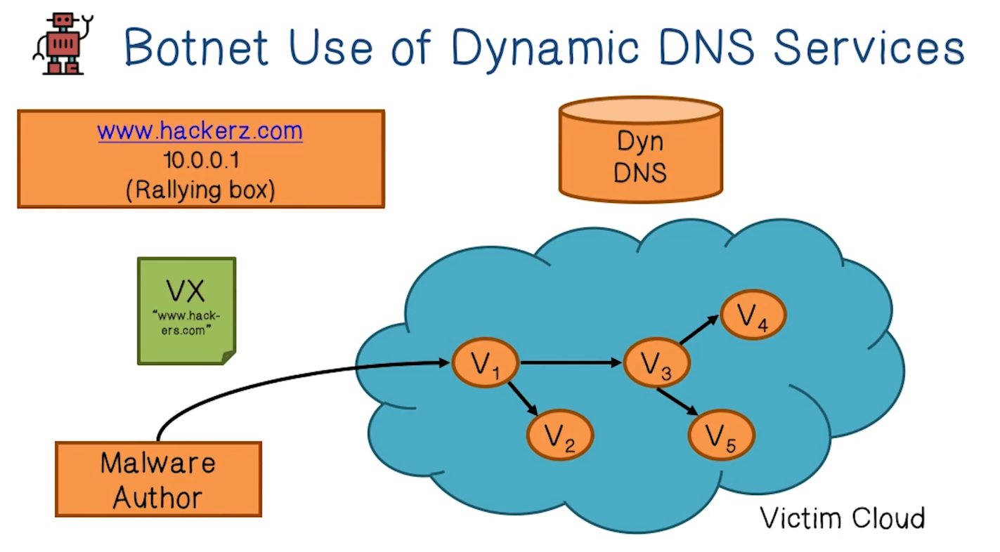
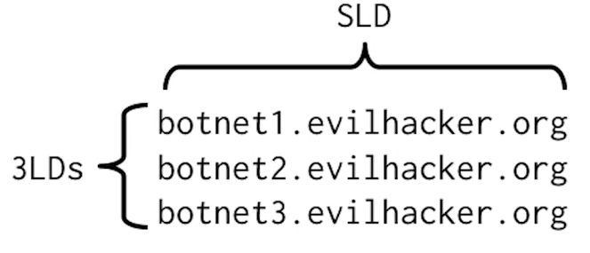

NetSec Lecture Notes - Lesson 14 - Botnet Detection
Botnet Detection
- Rules of engagement have changed
- In the past, enemies were easy to distinguish
- New technology such as botnets and APTs have changed this dynamic
Network Monitoring
- Attack traffic used to be well-defined and obvious e.g.:
- Payload contains exploit toa a known vulnerability
- Volume/rate suggests DoS, Spam, etc.
- Firewalls and network intrusion detection systems
- Designed to identify attack traffic
Advanced Network Monitoring
- Traditional firewall/NIDS
- Are bypassed by mobile devices compromised while outside network perimiter
- Attack traffic is now very subtle
- e.g. botnet HTTP-based command and control traffic looks like normal web traffic
- Need more advanced network monitoring
- Identify traffic beyond obvious exploit/attacks
- In particular, botnet detection systems
Bot Quiz
Fill in the blanks with the correct answers A Bot is often called a zombie because it is a compromised computer controlled by malware without the consent and knowledge of the user.
Botnet Quiz
Fill in the blanks with the correct answers A botnet is a network of bots controlled by a Bot Master.
- More precisely, a coordinated group of malware instances that are controlled via command and control channels. C&C architectures include centralized (e.g. IRC, HTTP) and distributed (e.g. P2P)
It is a key platform for fraud and other for-profit exploits.
Botnet Tasks Quiz
Select all the tasks that botnets commonly perform
- More than 95% of all spam
- True
- All distributed denial of service attacks
- True
- Click fraud
- True
- Phishing and pharming attacks
- True
- Key logging and data/identity theft
- True
- Distributing other malware, e.g. spyware
- True
- Anonymized terrorist and criminal communication
- True
Why Traditional Security Measures Fail
- Traditional Anti-Virus Tools
- Bots use packer, rootkit, frequent updating to easily defeat AV tools
- Traditional IDS/IPS
- Look at only specific aspects
- e.g. poayload with exploit
- Do not have a big picture
- Bots are for long-term use
- 
- Look at only specific aspects
- Honeypot/Honeynet
- Not scalable, mostly passively waiting
- Bots can detect/discover honeypot/honeynet
- Because it is usually a single host, it is not a good botnet detection tool
Botnet Detection: Challenges
- Bots are stealthy on the infected machines
- e.g. rootkit hides the malware
- Bot infection is usually a multi-faceted and multi-phased process
- Only looking at one specific aspect likely to fail
- Bots are dynamically evolving
- Static and signature-based approaches may not be effective
- Botnets can have very flexible designs of C2 channels
- A solution very specific to a given botnet instance is not desirable
Botnet Detection: Guidelines
- Distinguish botnet activities from normal network traffic
- Bot: non-human
- Net: bots are connected, activities are coordinated
- Distinguis botnets from other (older) attacks
- For profit (hosts used as resources)
- Long-term use (updates to the malware)
- Net (coordination)
Botnet Detection: Enterprise Networks
- Deploy detection at gateway or edge router
- Vertical correlation
- Looking for correlated events across a time horizon given that a bot has multiple activities in its life cycle
- e.g. BotHunter
- Horizontal correlation
- Looking for similar, or correlated, behaviors across multiple bots
- e.g. Botsniffer, BotMiner
- Cause-Effect correlation
- Inject traffic to elicit a response from a bot, to confirm that traffic is generated by bots vs by humans
BotHunter
- Vertical dialog correlation
- Example: Phatbot
- 
- Egress point (internal or external)
- Search for duplex communication sequences that map to infection lifecycle model
- Stimulus does not require strict ordering, but does require temporal locality
- Characteristics of Bot declarations
- External stimulus alone cannot trigger bot alert
- 2x internal bot behaviors triggers bot alert
- 
Architecture

- SCADE
- Statistical Scan Anomaly Detection Engine
- Custom malware specific weighted scan detection system for inbound and outbound sources
- Bounded memory usage to the number of inside hosts, less vulnerable to DoS attacks
- Inbound (E1: Initial Scan Phase):
- suspicious port scan detection using weighted score
- fialed connection to vulnerable port = high weight
- fialed connection to other port = low weight
- Outbound (E5: Victim Outbound Scan Phase):
- S1 - Scan rate of V over time t
- S2 - Scan failed connection rate (weighted) of V over t
- S3 - Scan target entropy (low revisit rate implies bot search) over t
- Combine model assessments: Or, Majority voting, AND scheme
- Statistical Scan Anomaly Detection Engine
- SLADE
- Statistical pay Load Anomaly Detection Engine
- Suspicious payload detection: new “lossy” n-gram byte distribution analysis over a limited set of network services
- Implements a lossy data structure to capture 4-gram hash space: default vector size = 2048 (versus n=4, 2564 = 232 = 4Gb)
- Comparable accuracy as full n-gram scheme: low FP and FN
- General performance comparable to PAYL (Wang 2004): to detect all 18 attacks, the false positive of PAYL is 4.02%, SLADE is 0.3601%
- Statistical pay Load Anomaly Detection Engine
- Signature Engine
- Signature set
- Replaces all standard snort rules with five custom rulesets
- Scope: Dialog content
- Known worm/bot exploit signatures, shell/code/script exploits, malware update/download, C&C command exchanges, outbound scans
- Rule sources
- Bleeding edge malware rule sets
- Snort community rules
- Cyber-TA custom bot-specific rules
- Signature set
BotMiner
- Why do we need another?
- BotHunter based on specific infection lifecycles.
- Botnets can change their C&C content, protocols, structures, C&C servers, infection models, etc.
- Goal is to have a botnet detection system that is procotol and structure-independent
- Use both vertical and horizontal correlation
- Bots are for long-term use
- Botnet: communication and activities are coordinated/similar
Architecture

- C-Plane is for monitoring C&C traffic
- 
- Temporal related statistical distribution information in
- Bytes per second
- Flows per hour
- Spatial related statistical distribution information in
- Bytes per packet
- Packets per flow
- Clustering of C-flows done in two steps. Coarse-grained and then fine-grained
- Why? Efficiency
- Coarse-graned: Using reduced feature space: mean and variance of the distribution of FPH, PPF, BPP, BPC for each C-flow (2 * 4 = 8)
- Efficient clustering algorithm: X-means
- Fine-grained clustering: Using full feature space (13 * 4 = 52)
- A-Plane is for monitoring malicious activities
- 
- Capture “similar activity patterns”
- Cross-plane correlation is for detecting machines that behave similarly in both control plane and malicious activities
- Cross-check the clustering results of A-plane (activities) and C-plane (communications)
- Intersections provide stronger evidence that a host is in a botnet: similar malicious activities AND C&C patterns
- The more intersections a host falls into the stronger evidence that it is a bot
- Clustering bots into the same botnet
- If two hosts appear inthe same activity clusters and in at least one common C-cluster, they should be clustered together (as the same botnet)
- Cross-check the clustering results of A-plane (activities) and C-plane (communications)
Botnet Detection Quiz
Which of these behaviors are indicative of botnets?
- Linking to an established C&C server
- True
- Generating IRC traffic using a specific range of ports
- True
- Generating DNS requests
- False
- Generating DNS requests is not suspicious behavior. Generating SIMULTANEOUS IDENTICAL DNS requests is suspicious
- Generating SMTP emails/traffic
- True
- Reducing workstation performance/Internet access to the level that it is noticeable to users
- True
BotMiner Limitations Quiz
What can botnets do to avoid C-plane clustering?
- Manipulate communication patterns
- Introduce noise (in the form of random packets) to reduce similarity between C&C flows.
What can botnets do to avoid A-plane monitoring?
- Perform slow spamming
- Use undetectable activities (spam sent with Gmail, download exe from HTTPS server)
Botnet Detection on the Internet
- A botnet must use Internet protocols or services for efficiency, robustness, and stealth
- Look-up services (e.g. DNS, P2P DHT)
- Find C&C servers and/or peers
- Hosting services (Web servers and proxies)
- Storage and distribution/exchange of attack-related data, malware download
- Transport (e.g. BGP)
- Route (or hide) attack from bots to victims
- Identify the abnormal use of Internet services that suggests botnet activities
- This lesson will focus on DNS
- USed by most bots for locating C&C and hosting sites
- Look-up services (e.g. DNS, P2P DHT)
Botnet Use of Dynamic DNS Services

- Dynamic DNS providers preferred by BotMasters because they allow frequent changes of DNS mapping, allowing rotation of IP addresses as each one gets shot down
- Detecting bot DNS traffic can be done probabilistically
- e.g. a botnet DNS is looked up by hundreds of thousands of machines accross the internet, but is unknown to Google search. This is a strong signal / anomaly
- If a domain is identified as being used for a botnet, a Dnstop alert can be issued. DynDNS updates CName to point to GT sinkhole
How else can this be detected?
- Observation 1: hard-coded C&C domain (string)
- Domain name purchases use traceable financial information, so there is an incentive to get as much mileage out of a 2LD as possible. Multiple 3LDs can use DDNS service with one package deal.
- Thus: financial and stealthy motives for botnet authors to “reuse” 2LD with numerous similar/clustered 3LDs.
- Clustered 3LD look-ups
- Cluster the 3LDs under a SLD based on their similarities on names, and subnets of resolved IPs
- Sum up the look-ups to all domains within a cluster. Botnet domains tend to have waaaay higher totals when compared to normal traffic
- 
- Observation 2: DNS look-up behavior of botnets
- After boot, bots immediately resolve their C&C
- Exponential arrival (spike) of bot DNS requests, because of time zones, at 9am/5pm schedules, etc.
- Normal DNS lookup behavior is a lot smoother
- Human users don’t all immediately check the same server right after boot
- After boot, bots immediately resolve their C&C
- Other observations/features
- Source IP dispersion in DNS look-ups
- Local or global popularity of the domain
- Resolved IP dispersion
- Distributed in many different networks?
- Number of times resolved IP changed
- Source IP dispersion in DNS look-ups
### Botnet DynDNS Detection at a Large ISP
- Recursive DNS Monitoring at ISP
- Analyze DNS traffic from internal hosts to a recursive DNS server(s) of the network
- Detect abnormal patterns/growth of “popularity” of a domain name
- Identify botnet C&C domain and bots
- Monitor for “new and suspicious” domain names that enjoy exponential or linear growth of interests/look-ups
- Train a Bloom filter for N days to reccord domain names being looked-up, and a Markove model of all the domain name strings
- On the N+1 day, consider a name “new” if it is not in the Bloom filter, and if it does not fit the Markov model, it is also “suspicious”
- Treat the sequence of look-ups to each new and suspicious domain (on the N+1 day) as a time series
- Apply linear and exponential regression techniques to analyze the growth of number of look-ups
- A match of the growth patterns suggests botnet domains
- Train a Bloom filter for N days to reccord domain names being looked-up, and a Markove model of all the domain name strings
- Common means of botnet propagation: (worm-like) exploit-based, email-based, and drive-by egg download
- Exploit-based propagation
- The number of infected machines grows exponentially in the initial phase
- Email-based propagation
- Exponential or linear
- Drive-by egg download
- Likely sublinear
- Exploit-based propagation
- Anomalous domain names
- Botnet-related domains usually contain random-looking (sub)strings
- Many/most sensible domain names have been registered (for legitimate use)
- In particular, botnet domain name 3LD often looks completely random, and the domain name tends to be very long
Detection of Targeted and Advanced Threats
- Zero-day exploits, custom-built malware
- Low-and-slow
- Lateral movement
- Need multi-faceted monitoring and analysis
- Malware analysis
- Host-based monitoring, forensics, recovery
- Network monitoring
- Internet monitoring, threat analysis, attribution
APT Quiz
Which of the information should be considered in order to identify the source of an APT attack?
- Source IP address of TCP-based attack packets
- Coding style of malware
- Inclusion of special libraries with known authors
- Motives of the attack
- Language encoding
- All of the above
- True!